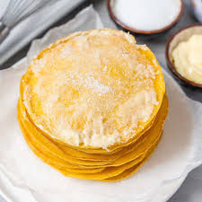

Filipino Recipe Collection
Discover authentic Filipino dishes that bring the taste of home to your table

🍜 Noodles
Pancit Bihon
Classic Filipino stir-fried rice noodles with vegetables, meat, and shrimp

🥞 Breakfast
Filipino-Style Pancakes
Fluffy, sweet pancakes perfect for Filipino breakfast or merienda

🍝 Pasta
Filipino Sweet Spaghetti
Sweet and savory spaghetti with hotdogs - a Filipino party favorite

🍗 Main Dish
Chicken Adobo
The unofficial national dish - savory, tangy, and absolutely delicious

🥘 Soup
Sinigang na Baboy
Comforting sour tamarind soup with tender pork and vegetables

🍝 Pasta
Filipino-Style Carbonara
Creamy, cheesy pasta the Filipino way - richer and more indulgent
💡 Filipino Cooking Tips
🍚 Perfect Rice Every Time
Wash rice until water runs clear. Use 1:1.5 rice to water ratio for jasmine rice.
🥄 Balance Sweet & Savory
Filipino cuisine loves balancing flavors. Don't be afraid to adjust sugar and salt to taste.
🌶️ Control the Heat
Siling labuyo (bird's eye chili) is spicy! Start with less and add more to your preference.